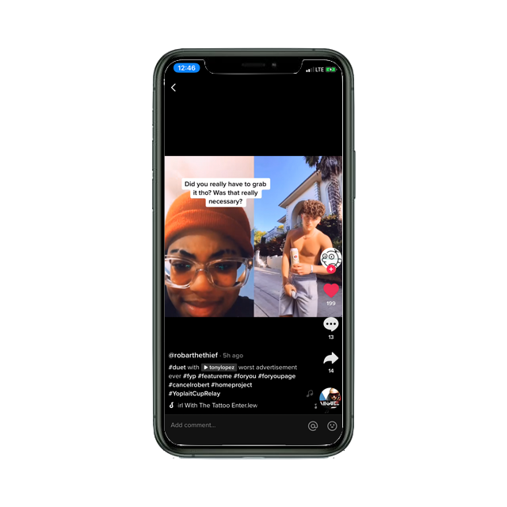
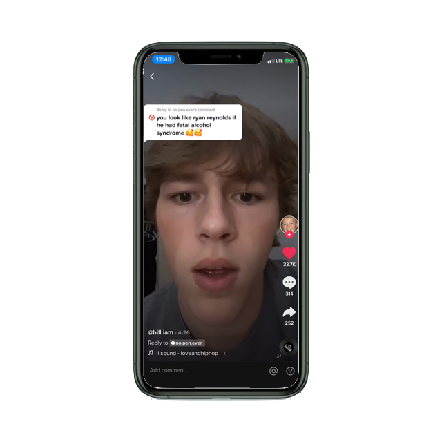
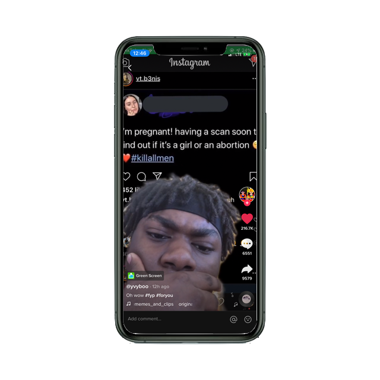
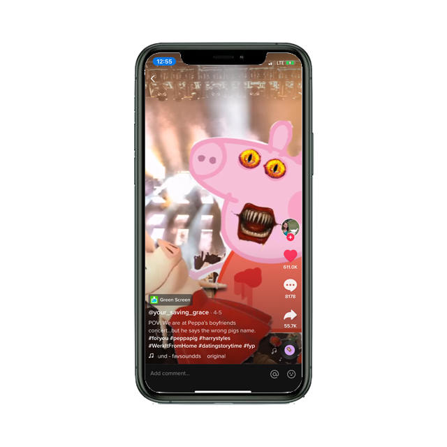
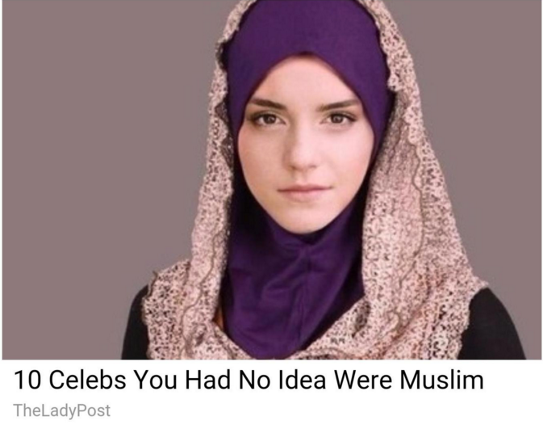

CLICKBAIT CULTURE
For some people, attention isn’t just something they want, it’s something they need. Take influencers for example– they use brand deals and advertising on youtube videos to make large sums of money. Online attention pays essentially their bills and can, if they’re successful, even become their main source of income. How do they get people to click on their videos though? After all, there are thousands of other people out trying to get noticed– how does one stand out from everyone else? What do they have to do to get the most attention? Let’s explore…
YouTube


This woman took the trouble to edit a completely fake thumbnail. I was excited to see a mini-brand’s Oreo because I didn’t even know they existed…it turns out that’s because they don’t exist. She photoshopped in a tiny Oreo container so people like me would click on her video. There aren’t Oreos anywhere in her video. I’m just so disappointed. I’m a fool.
I don’t even know where to start with this one. I’m just confused. Trisha isn’t transgender she’s just using this for views… yet she didn’t really get canceled over it, she just got made fun of. Is this considered queer-bating? I’m not really sure but something about it just doesn’t feel right.


Let’s just note this video has 15 Million views first. I’m not sure if this is just clickbait because nothing could ever make me click the link to watch this video for myself, but just the fact that she captioned it that and included that thumbnail makes me take her word for it. I hope whatever she was trying to accomplish with this video was worth it… and with 15 million views, it probably was. She probably made so much money by peeing on him. I could only dream my pee would make such an impact.
When a YouTuber has any slightly dramatic experience it is automatically 10 times worse. I think it’s because they have to exploit their own life to make it seem as interesting as possible. She photoshopped a literal plane burning down. And if that’s a real photo, imagine dying in an actual plane crash just to have some tween girl use it in her video to get views. Kinda gross.
TIK TOK
20 year old straight guys grabbing their junk on a kids app directed to their fan base that is majorly made up underage 12 year old girls? No thank you. but I don’t really have a choice when it shows up on my feed. And to top it off, his post was literally an add for bang energy drinks. Did they approve of this? I hope not.
 I actually like this side of the internet. I mean I know he’s responding to a bully but putting haters on blast and using the pointless negative comments to get views for yourself is such a power move. Plus the comment section of videos like this are usually pretty positive.
I think every social media platform would NOT be complete without a twitter screenshot. They’re on tumblr, Instagram, and now Tik Tok too. But this is also a trend where people steal other peoples content for their own views. Noticed how the original twitter handle has been blacked out– that’s so rude. NO FREE CLOUT!
 Ah yes, the fandom side of the internet. Sometimes these videos get very niche. Here he have a Peppa pig and Olivia the pig crossover. Iconic on all levels, this is one of my all-time favorite Tik Toks I highly recommend finding it.
And My Personal Favorite...
This wasn’t meant to be any sort of critique on the way people live their online lives. There’s nothing wrong with being a little over the top for attention (although there are definitely multiple lines that shouldn’t be crossed). Most of the time, people are just doing whatever makes them happy or trying to make others happy. Clickbait can be good or bad, but most of the time it’s just entertaining!